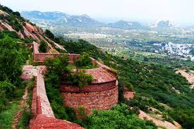

SANKARI FORT
OLDEST ANCIENT FORT

Sankagiri Fort is a historical fort maintained by the Archaeological Survey of India.
It is located 22 km from the city of Erode and 38 km from Salem.
Sankari or Sankagiri is the town located around this place.
The fort is 707 meters (2319.6 feet) high and covers an area of 558.58 acres.
Sangagiri Fort was built in 15th century Vijayanagar empire.
It has 14 fort walls built on and around a hill and the last phase these walls were built by the British.